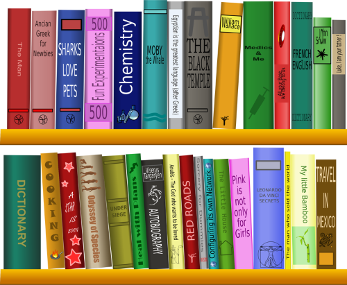

My name is Candace and I'm so glad to meet you all. I am taking classes at EKU and working toward my Library Media specialist Certificate. This career path only makes sense to me since it involves two things I love: Children and reading!! From a very young age in elementary school I have always wanted to be a teacher. When I started teaching, my first job was Kindergarten, which I taught for three years. I had also dreamed to teach special education which I did for 11 years. However, in the back of my mind and in my heart I have always loved reading and books. Library Media Specialist was a dream job for me. We had an opening at my school, I prayed about it and went for it and got it! I am working through the classes while learning the job and I am very blessed to have this opportunity to hold this position.
I guess you are wondering why do I need my own page. I am learning to create websites from HTML editors, so this is great practice for me. Once I become proficient in this area, I can then teach my students how to make their own webpages. Then the possibilities are endless! Stay tuned to see what comes next...
THANK YOU FOR VISITING ME